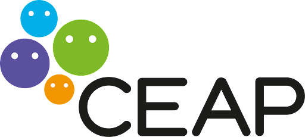

Capitão


Tripulantes


- Diego Guilherme Dourado Dos Passos
- 17 anos
- Profissão dos sonhos na infância: Gamer Profissional
- Comida Favorita: Strogonoff
- Musicas Favoritas: Bohemian Rhapsody - Queen
- Linguagens e Tecnologias mais curtem: Tecnologias Web(HTML, CSS e JavaScript) e frameworks(ReactJS e Angular)


- Kauã Chaves Calixto
- 17 anos
- Profissão dos sonhos na infância: Astronauta/ Diretor/ Programador/ Profissional de Vôlei
- Comida Favorita: Carne moída em tudo e de qualquer forma.
- Musicas Favoritas: EDEN/ Tarcísio do Acordeon/ Mc Hariel
- Linguagens e Tecnologias mais curtem: Java

- Ana Helena Faustino Teodoro
- 16 anos
- Profissão dos sonhos na infância: Ser bombeira
- Comida Favorita: Lasanha
- Musicas Favoritas: Beyoncé - Pretty Hurts
- Linguagens e Tecnologias mais curtem: Tecnologias Web (HTML, CSS e JavaScript)

- Victoria Lucena da Silva
- 17 anos
- Profissão dos sonhos na infância: Sempre soube que seria com tecnologia, mas nunca soube o que era
- Comida Favorita: Baião de Dois
- Musicas Favoritas: Proteção de Tela - Tarcísio do Acordeon / Filipe Ret - Invicto
- Linguagens e Tecnologias mais curtem: Tecnologias Web (HTML, CSS e JavaScript)